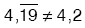
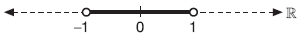
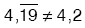

RASYONEL SAYILAR
A. TANIM:
a ve b tam sayı, b ¹ 0 olmak üzere, şeklinde ifade edilen sayılara rasyonel sayı veya kesir denir.
B. KESİR:
Bir birimin bölündüğü eşit parçalardan birini veya bir kaçını göstermeye yarayan sayılara kesirdenir.
C. KESİR ÇEŞİTLERİ
1. Basit Kesir: İşaretine bakılmaksızın payı paydasından küçük olan kesirlere basit kesir denir.
Aşağıdaki doğruda koyu yere denk gelen sayılara basit kesir denir.

| Not: pozitif basit kesir ise, |
2. Bileşik Kesir: İşaretine bakılmaksızın payı paydasından küçük olmayan (büyük veya eşit olan) kesirlere bileşik kesir denir. Bileşik kesirler tam sayılı kesir diye de adlandırılabilir. Tam sayılır kesir, önde tam sayı olan kesirdir.
Aşağıdaki doğruda koyu gösterilen yere denk gelen sayılara bileşik kesir denir.
3. Tam Sayılı Kesir:Herhangi bir sayma sayısı ile birlikte yazılabilen kesirlere tam sayılı kesir denir.
birer tam sayılı kesre örnektir.
Her bileşik kesir bir tam sayılı kesir biçiminde yazılabilir.
D. RASYONEL SAYILARDA İŞLEMLER:
Kesrinin pay ve paydası sıfırdan farklı bir k tam sayısıyla, çarpıldığında veya bölündüğünde kesrin değeri değişmez. Bu işleme kesrin genişletilmesi veya sadeleştirilmesi denir.
1. Genişletme ve Sadeleştirme
kesrinin;
2. Denk Kesirler
Kesrinin genişletilmesi veya sadeleştirilmesiyle ye eşit pek çok kesir elde edilebilir. Bu kesirler ye denktir denir. kesri, kesrine denk ise, biçiminde yazılır, “a bölü b kesri c bölü d kesrine denktir” diye okunur.
| Her denk kesir aynı zamanda eşittir. Buna göre, |
3. Toplama – Çıkarma İşlemi
Toplama ve çıkarma işleminde payda eşitlenecek biçimde kesirler genişletilir ya da sadeleştirilir. Oluşan kesirlerin payları toplanır (ya da çıkarılır) ortak payda alınır.
4. Çarpma – Bölme İşlemi
NOT:
5. İşlem Önceliği:
Toplama, çıkarma, çarpma, bölme ve üs alma işlemlerinden bir kaçının birlikte bulunduğu rasyonel sayılarda işlemler, aşağıdaki sıraya göre yapılır.
1) Parantezler ve kesir çizgisi işleme yön verir.
2) Üslü işlemler varsa sonuçlandırılır.
3) Çarpma – bölme yapılır.
4) Toplama – çıkarma yapılır.
| NOT: Toplama ile çıkarma işlemi kendi arasında öncelik taşımaz. Aynı şekilde çarpma ile bölme işlemi de kendi arasında öncelik taşımaz. Özelikle çarpma ile bölme de öncelik söz konusu ise bu parantezle belirlenmiştir. |
E. ONDALIK KESİR:
Bir rasyonel sayının payını paydasına böldüğümüzde bu rasyonel sayının ondalık açılımını buluruz. Bu ondalık açılıma ondalık kesir denir.
1. Ondalık Kesir
Burada a ya tam kısım, bcd ye de ondalıklı kısım denir.
2. Devirli (Periyodik) Ondalık Kesir:
Bir ondalık kesirde ondalıklı kısım belli bir kurala göre tekrarlanıyorsa bu sayıya devirli ondalık kesir denir.
3. Ondalık Kesirlerde İşlemler:.
a. Toplama – Çıkarma: Ondalık kesirler toplanırken, virgüller alt alta gelecek şekilde yazılır ve doğal sayılarda toplama – çıkarma işleminde olduğu gibi toplama – çıkarma işlemi yapılır. Sonuç, virgüllerin hizasından virgülle ayrılır
b. Çarpma: Ondalık kesirlerin çarpımı yapılırken, virgül yokmuş gibi çarpma işlemi yapılır. Sonuç, çarpılan sayıların virgülden sonraki basamak sayılarının toplamı kadar, sağdan sola doğru virgülle ayrılır.
c. Bölme: Ondalık kesirlerin bölme işlemi yapılırken, bölen virgülden kurtulacak biçimde 10 un kuvveti ile çarpılır. Bölünen de aynı 10 un kuvveti ile çarpılarak bölme işlemi yapılır.
4. Devirli Ondalık Kesirlerin Rasyonel Sayıya Dönüştürülmesi
Bir devirli ondalık açılımı şeklinde yazarken;
Virgül ve devreden dikkate alınmadan; okunan sayıdan, devretmeyen sayıyı çıkararak paya yazılır.
Paydaya ise virgülden sonraki devreden basamak sayısı kadar 9 ve sağına devretmeyen basamak sayısı kadar sıfır yazılır.
a, b, c, d, e birer rakam olmak üzere,
Not: Devreden 9 ise bir önceki rakam 1 artırılır.

F. RASYONEL SAYILARDA SIRALAMA
Pozitif kesirlerde sıralama yapılırken aşağıdaki yollardan biri kullanılır.
1. Yol
Paydaları eşit olan (eşitlenen) kesirlerden payı en büyük olan diğerlerinden daha büyüktür.
2. Yol
Payları eşit olan (eşitlenen) kesirlerden paydası en küçük olan diğerlerinden daha büyüktür.
3. Yol
Payı ile paydası arasındaki farkı eşit olan, pozitif basit kesirlerde, payı en büyük olan diğerlerinden daha büyüktür.
Payı ile paydası arasındaki farkı eşit olan, bileşik kesirlerde, payı en büyük olan diğerlerinden daha küçüktür.
Yukarıda verilen yöntemler pozitif kesirlerde geçerlidir. Negatif kesirlerde ise durum tersinedir.
| a ve n doğal sayı olsun.n sabit iken a büyüdükçe bileşik kesrinin değeri azalır. |
G. İKİ RASYONEL SAYI ARASINDAKİ SAYILAR
Arasında sayılamayacak çoklukta rasyonel sayı vardır. Bunlardan bazılarını bulmak için b ile d nin e.k.o.k. u bulunur. Verilen kesirlerin paydaları bulunan e.k.o.k. da eşitlenir. İstenen koşuldaki sayıyı bulmak için kesirler genişletilebilir.
x sayısı kesirlerinin ortasındaki bir sayı ise,

| NOT: a ve n doğal sayı olsun.n sabit iken a büyüdükçe basit kesrinin değeri artar. |